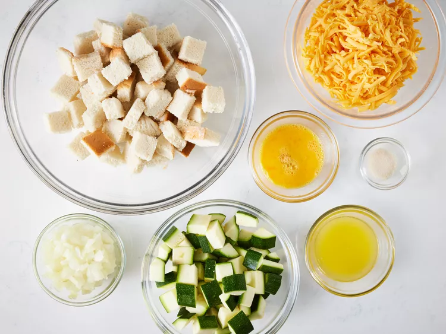

Home
Cheesy Zucchini Casserole

Description:
This zucchini casserole with bread cubes, onion, and Cheddar is simple and
easy to make for a deliciously cheesy vegetable side dish.
ingredients:
- 4 slices bread, cubed
- ¼ cup melted butter
- 2 cups cubed zucchini
- 1 large onion, finely chopped
- 1 large egg, beaten
- 1 teaspoon garlic salt or to taste
- 2 cups shredded Cheddar cheese
Steps:
-
Gather all ingredients. Preheat the oven to 350 degrees F (175 degrees
C).

-
Place bread cubes in a medium bowl and pour melted butter over top. Add
zucchini, onion, egg, and garlic salt; mix well.

-
Transfer the mixture into a 9x13-inch baking dish and top with cheese.

-
Cover and bake in the preheated oven for 30 minutes. Uncover the dish
and bake for another 30 minutes.